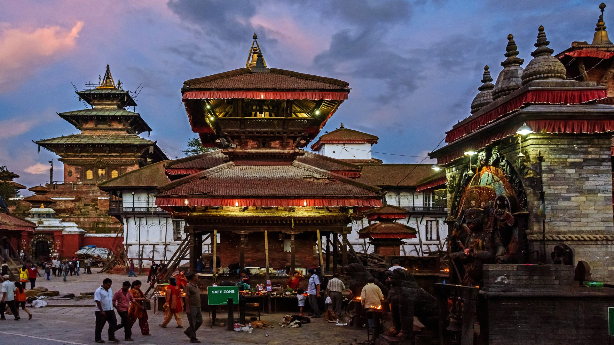

that everybody should experience in a lifetime.
KATHMANDU
Stepping into Ktm is stepping into another worldthat everybody should experience in a lifetime.
Kathmandu is an incredibly diverse historic city with breathtaking Newari architecture, centuries old Hindu and Buddhist religious sites along with dedicated tourist-friendly accommodations and restaurants. Stepping into Kathmandu is like stepping into another world that everybody should experience at least once in their lifetime.
Kathmandu is a city where ancient traditions rub shoulders with the latest technology. The grandeur of the past enchants the visitor whose gaze may linger on an exquisitely carved wooden window frame, an 18th century bronze sculpture or a spiritually uplifting stupa. Kathmandu, the largest city of Nepal, is the political as well as cultural capital of the country.
 Like any big city, Kathmandu has seen rapid expansion in the last decade, but despite the hustle and bustle so typical of metropolitan cities, its people remain refreshingly friendly. The city is a warden of its ancestral value “Atithi Devo Bhava” meaning "Guest is equivalent to God".
Like any big city, Kathmandu has seen rapid expansion in the last decade, but despite the hustle and bustle so typical of metropolitan cities, its people remain refreshingly friendly. The city is a warden of its ancestral value “Atithi Devo Bhava” meaning "Guest is equivalent to God".
Retaining its ancient traditions, Kathmandu is blessed by Living Goddess Kumari and is enriched by endless ceremonial processions and events that take to the streets every now and then with throngs of devotees seeking joy in spiritual celebrations. These religious festivals are steeped in legends and are quite a spectacle with chariot processions and masked dancers often possessed by the spirits of deities.
Kathmandu is a result of diverse culture and lifestyle, a long history of faith and beliefs, and of arts and architecture. Therefore, more than just a city, Kathmandu is a living museum, it is an opportunity to travel back in time and to relive in the history.
Kathmandu is a city where ancient traditions rub shoulders with the latest technology. The grandeur of the past enchants the visitor whose gaze may linger on an exquisitely carved wooden window frame, an 18th century bronze sculpture or a spiritually uplifting stupa. Kathmandu, the largest city of Nepal, is the political as well as cultural capital of the country.
Like any big city, Kathmandu has seen rapid expansion in the last decade, but despite the hustle and bustle so typical of metropolitan cities, its people remain refreshingly friendly. The city is a warden of its ancestral value “Atithi Devo Bhava” meaning "Guest is equivalent to God". Retaining its ancient traditions, Kathmandu is blessed by Living Goddess Kumari and is enriched by endless ceremonial processions and events that take to the streets every now and then with throngs of devotees seeking joy in spiritual celebrations. These religious festivals are steeped in legends and are quite a spectacle with chariot processions and masked dancers often possessed by the spirits of deities.
Kathmandu is a result of diverse culture and lifestyle, a long history of faith and beliefs, and of arts and architecture. Therefore, more than just a city, Kathmandu is a living museum, it is an opportunity to travel back in time and to relive in the history.